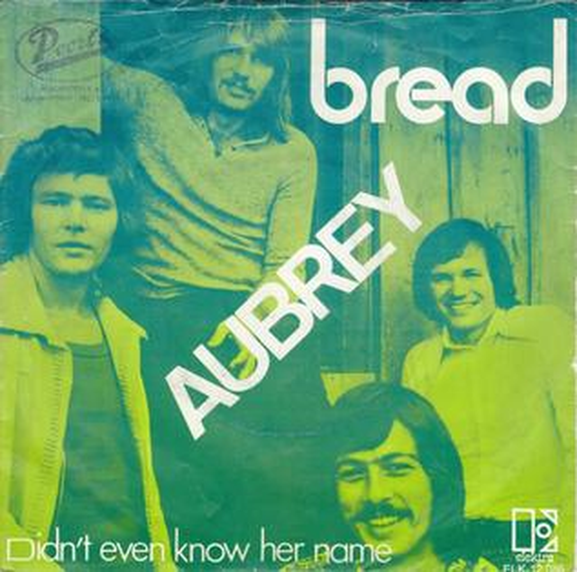

Aubrey - 아쉬움과 그리움, 회한의 노래
게시: 2019-04-18T06:30:30+09:00
제가 즐겨읽던 Aubrey-Maturin 시리즈는 나폴레옹 전쟁 당시 영국 해군을 배경으로 한 무용담 소설로서, 그 주인공 이름이 Jack Aubrey입니다. 여러분은 Aubrey라는 이름이 남자 이름 같습니까, 여자 이름 같습니까 ? 생각해보면 유럽 계통의 모든 family name은 다 남자 이름입니다. 한번도 여성스러운, 가령 Elizabeth나 Jessica 같은 이름이 family name으로 쓰이는 것을 본 적이 없어요. 그런 것을 보면 분명히 Aubrey는 남자 이름입니다. 그런데 이건 현대 영미권 사람들에게도 좀 헷갈리는 문제인가 봐요. 구글에 'Is aubrey male' 까지만 써도 "is aubrey a male or female name"라는 문장이 자동 제시됩니다. 그리고 그 검색 결과를 보면 '남자 이름이다 여자 이름이다' 라고 영미권 사람들끼리도 싸우더라고요. 그런데 분명히 20세기 초반까지만 해도 Aubrey는 부동의 남자 이름이었습니다. 그런데 노래 한곡이 그 모든 것을 바꿔 놓았습니다. 1972년 소프트 락 그룹인 'Bread'가 발표한 'Aubrey'라는 노래였지요. 이건 대단한 히트곡은 아니라서, 빌보드 차트 100위 안에 11주 동안 머물렀고 최고 순위가 15위 정도에 불과했어요. 그러나 무척 감미로운 가사와 멜로디 때문에 지금도 사랑받는 노래이지요. 이 노래에서도 '그녀 이름은 오브리였어 평범한 이름도 평범한 여자도 아니었지' 라는 가사가 나옵니다. 그런데 이 노래 덕분에, 이후로 여자 이름을 Aubrey라고 짓는 것이 대유행했고, 결국 이후로는 Aubrey가 남자 이름으로 사용되는 일은 거의 없어져 버렸다고 합니다. 원래 이 곡은 Bread의 리더인 David Gates가 '티파니에서 아침을'이라는 영화의 오드리 햅번을 보고 지은 것이라고 해요. 그런데 Audrey를 그대로 쓰기 좀 그러니 가사 속 여자의 이름을 Aubrey로 바꾼 것이지요.

사실 이 노래는 남녀 이름 구분에 대한 이야기가 아닙니다. 요즘 말로 한줄 요약하면 '썸만 타고 이루어지지는 못했던 상대'에 대한 노래에요. 그러나 그렇게 요약하니 정말 몰상식해보이고... 누구에게나 있을 법한, 이루어지지 않은 사랑에 대한 아쉬움과 그리움, 회한을 노래로 만든 것입니다. 정말 감미로운 노래에요. 노래 감상은 아래에서 하세요. https://youtu.be/kqXek853SDE And Aubrey was her name A not so very ordinary girl or name. But who's to blame? 그리고 그녀 이름은 오브리였어 이름도 여자도 평범하지는 않았지 하지만 그게 누구 잘못이람 ? For a love that wouldn't bloom For the hearts that never played in tune. Like a lovely melody that everyone can sing Take away the words that rhyme it doesn't mean a thing. 꽃피우지 못한 사랑에게 서로 박자가 맞지 않은 마음들에게 그건 마치 누구나 아는 아름다운 멜로디같지만 운율이 되는 단어를 빼면 아무 뜻도 없는 가사가 되는 것 같은 거야 And Aubrey was her name. We tripped the light and danced together to the moon But where was June. 그리고 그녀 이름은 오브리였어 우리는 불을 켜고 달빛에 맟춰 춤을 추었지 하지만 유월은 어디에 있었지 ? No it never came around. If it did it never made a sound Maybe I was absent or was listening too fast Catching all the words, but then the meaning going past 아니야 유월은 온 적이 없었어 왔었다면 기척도 내지 않았던 거지 어쩌면 내가 정신이 팔려 있었거나 건성으로 들었나봐 단어들은 다 들었지만 그 문장의 뜻은 알아듣지 못한 것처럼 말이야 But God I miss the girl And I'd go a thousand times around the world just to be Closer to her than to me. 하지만 아 정말 그녀가 그리워 이 세상을 천바퀴 돌아서라도 나보다는 그녀에게 더 가까이 가고 싶어 And Aubrey was her name I never knew her, but I loved her just the same I loved her name. 그리고 그녀 이름은 오브리였어 난 그녀를 알지 못했어 그래도 여전히 그녀를 사랑했지 난 그 이름이 좋았어 Wish that I had found the way And the reasons that would make her stay. I have learned to lead a life apart from all the rest. If I can't have the one I want, I'll do without the best. 내가 그럴 방법을 어떻게든 찾았다면 좋았겠지 그녀가 떠나지 않도록 설득할 이유도 함께 말이야 난 혼자서 살 방법을 배웠어 원하는 것을 얻지 못하더라도, 그럭저럭 살아갈 수 있어 But how I miss the girl And I'd go a million times around the world just to say She had been mine for a day. 그래도 정말 그녀가 그리워 이 세상을 백만번 돌아서라도 그녀가 하루 동안만이라도 내것이었다고 말할 수 있었으면 해

Source : https://en.wikipedia.org/wiki/Aubrey https://www.gpeters.com/names/baby-names.php?name=Aubrey https://www.mumsnet.com/Talk/baby_names/3198664-is-aubrey-a-girls-or-boys-name https://en.wikipedia.org/wiki/Aubrey_(song)
Aubrey (song) - Wikipedia
"Aubrey" is a song written and composed by David Gates, and originally recorded by the soft rock group Bread, of which Gates was the leader and primary music producer. It appeared on Bread's 1972 album Guitar Man. The single lasted 11 weeks on the Billboar
en.wikipedia.org